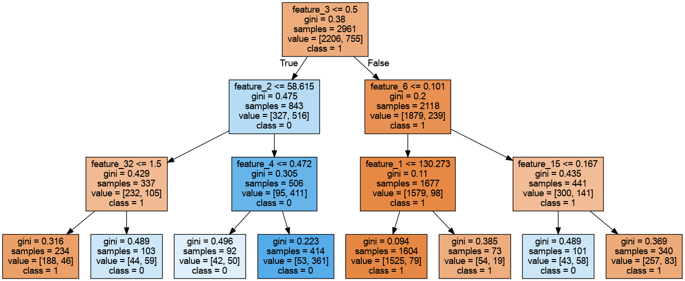
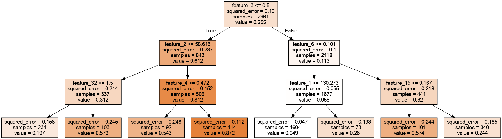
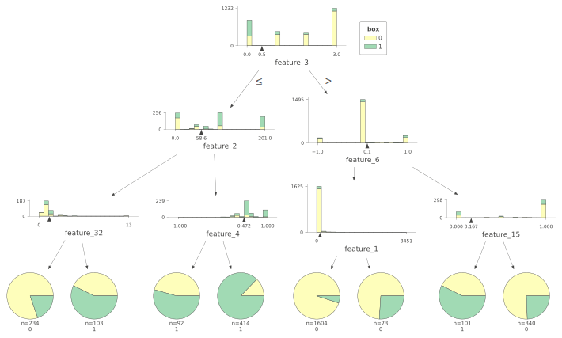

Scikit Based Visualizations
Scikit-learn is a popular open-source machine learning library for Python. It provides a wide range of tools for various machine learning tasks such as classification, regression, clustering, and dimensionality reduction. Scikit-learn also includes tools for data preprocessing, model selection, and evaluation, making it a comprehensive and user-friendly library for machine learning in Python.
DecisionTreeClassifier

General decision tree visualization, non-colored nodes have no majority prediction. The more is the color of the node satured the more samples of one specific class have majority over others.. Values are described in internal nodes as well.
See the Original Jupyter Notebook
DecisionTreeRegressor

General decision tree visualization, darker color of the node indicate higher predicted target values. Values are described in internal nodes as well.
See the Original Jupyter Notebook
Dtreeviz
The Python-based dtreeviz library is a visualization tool for decision trees. It allows users to create
interactive visualizations of decision trees, which can be used to gain insights into the structure and behavior
of these models. Additionally, dtreeviz provides a range of features that enable users to customize their
visualizations, making it a powerful tool for data exploration and analysis.
The dtreeviz library in Python is compatible with several decision tree libraries, including scikit-learn,
XGBoost, TensorFlow.
https://explained.ai/decision-tree-viz/
Classifier

The histograms in individual nodes show the feature (of certain split) space distribution. Adding color gives us an indication of the relationship between feature space and target class.
See the Original Jupyter Notebook
Regressor

Horizontal dashed lines in the scatterplots of individual nodes indicate the target mean for the left and right buckets in decision nodes; a vertical dashed line indicates the split point in feature space. The black wedge highlights the split point and identifies the exact split value. Leaf nodes indicate the target prediction (mean) with a dashed line.
See the Original Jupyter Notebook